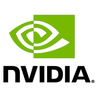
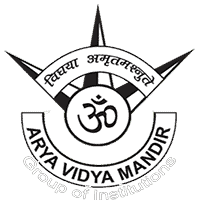

Experience
ASIC Engineer
NVIDIA
Duration: Starts in July
Location: Bengaluru, India

After thoroughly evaluating my performance during my internship, I was offered a Pre-Placement Offer from NVIDIA as a full-time employee. This will be my first full-time job and I am sure, I will learn a lot about the industry, market, organization and corporate life through this opportunity.
Hardware Intern
NVIDIA
Duration: May - June 2020 (2 months)
Location: Remote
After my third year, I was offered an internship at NVIDIA. Being my first work experience, I was looking forward to going to Bengaluru and working in an office. However, due to the Covid19 Pandemic, I had to complete the internship remotely.
Working individually under my mentor, my responsibility was to enhance a protocol converter plugin. After updating the code, I was also expected to formally verify it. Although I had some experience working with Verilog, Formal Verification was something I was not aware of. After a few weeks of learning, training & preparing, I was successful in enhancing the protocol converter and running formal verification on it before time. It was overall a great stepping stone into taking a first look at the industry.
Education
National Institute of Technology Karnataka
B.Tech. in Electronics & Communication Engineering
Duration: August 2017 - June 2021 (4 years)
Location: Surathkal, India
Grade: 9.45 CGPA

I spent four wonderful years at the NITK Surathkal campus. Quite close to my hometown of Udupi, it was a perfect way to not only enjoy/survive hostel life, but also not feel too homesick. I got to learn a field of study that interested me and from which I can hopefully forge a decent career.
While in college, I got chances to take part in different activities and be part of different clubs like -
- NITK Music Club - I spent four years in the music club of the college playing keyboard, performing in dozens of live shows & collaborating with fellow musicians.
- IEEE NITK - I was an executive member of the student branch of IEEE in NITK where I participated in Machine Learning & Embedded Systems events, competitions and projects
- Web Enthusiasts' Club - I was a member of the Web Enthusiasts' Club in which I worked on different Machine Learning projects
- IRIS Labs - I was a member of the research division of IRIS (Integrated Resource & Information Sharing - the digital portal used by NITK). I worked on integrating NL-to-SQL modules to the IRIS platform to help in the automated answering of general questions about the college.
- TechNites - A fun event during the college TechFest where students build innovative computer, electronic & mechanical devices.
PACE Junior Science College, Dadar
Duration: 2015 - 2017 (2 years)
Location: Mumbai, India
Grade: 91.38%

Vasudev C. Wadhwa Arya Vidya Mandir
Duration: 2002-2015 (13 years)
Location: Mumbai, India
Grade: 97%
